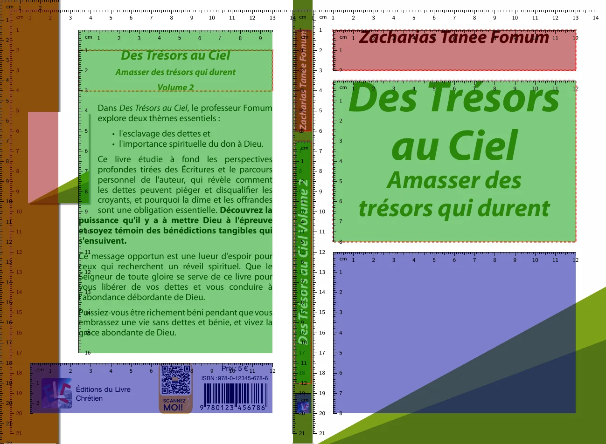
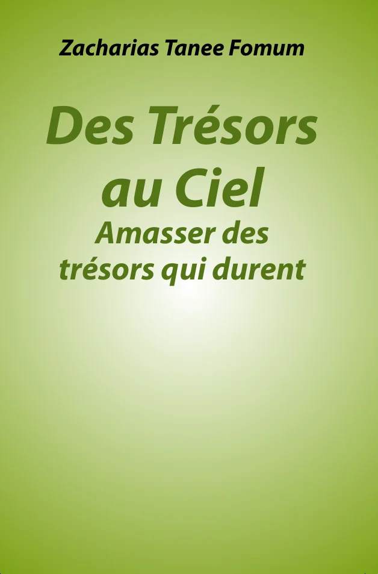
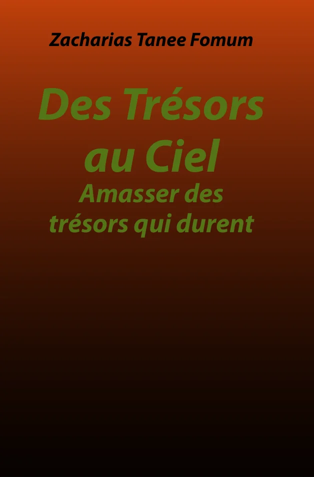
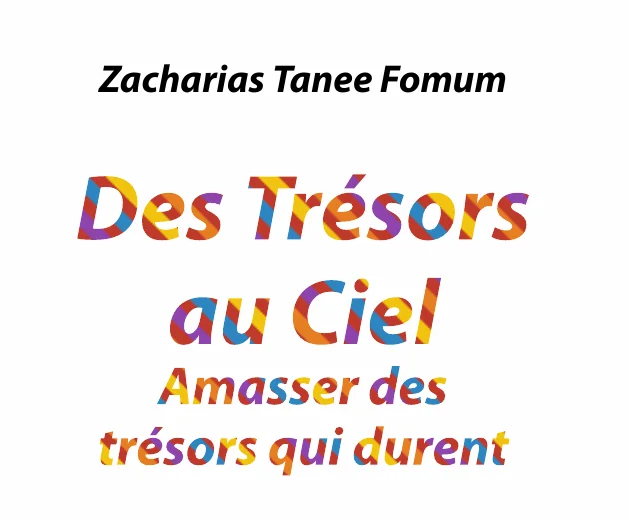
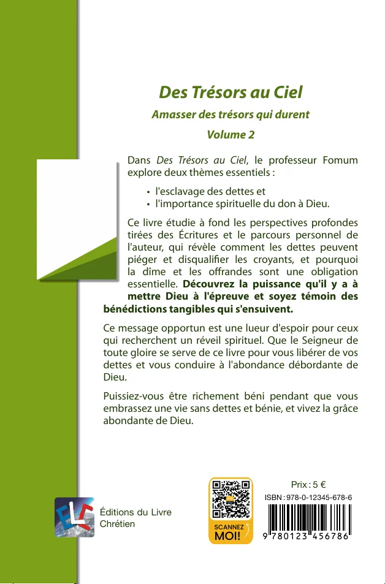
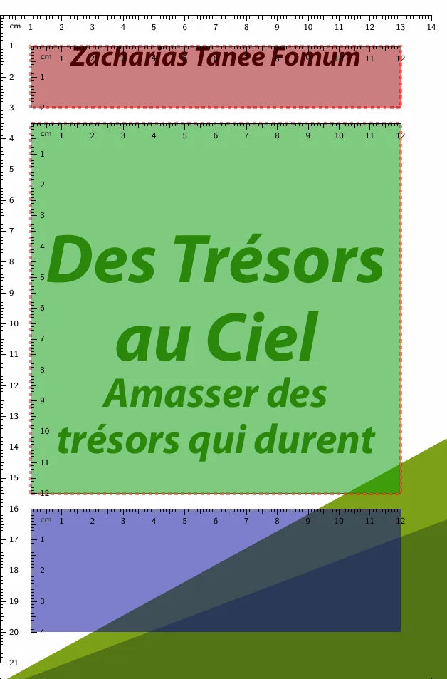
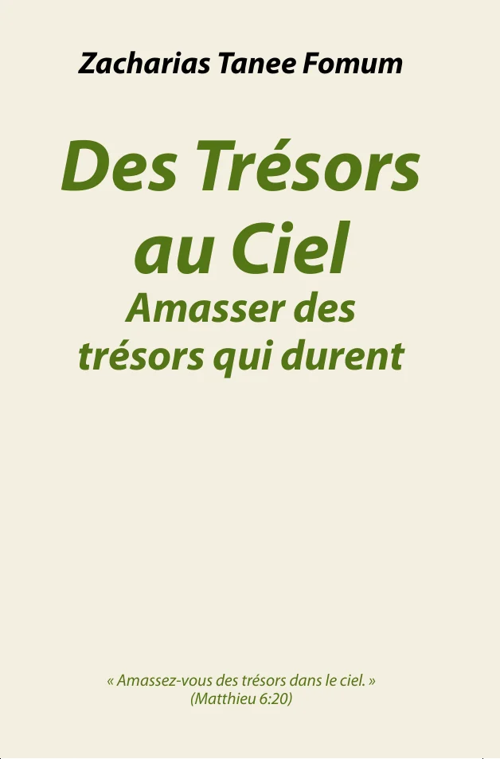

Show the areas of the cover
Only for checking a layout: leave it false on real covers.
{
"debug-boxes": true
}

English · Français
How each property of a book cover’s cover-properties.json changes the cover. Every picture is the default cover rendered with the properties beside it: only those differ from the default.
A print cover is one sheet: the back on the left, the spine in the middle and the front on the right. Every property name starts with the part it changes: whole-…, back-…, spine-… or front-…. With debug-boxes, the cover shows the areas the text is placed in: on the back, the margin box (red), the text (green) and the bottom area with the logo, price and barcode (blue); on the spine and the front, the author, title and epigraph sections.
Only for checking a layout: leave it false on real covers.
{
"debug-boxes": true
}
#RRGGBB, as in design tools: #547516 is a green. Add two digits for the opacity, #RRGGBBAA: 00 is invisible, 80 half transparent, FF opaque.12pt for font sizes, 10mm for distances. They are given for a 14 × 21 cm cover, and grow with larger covers (16 × 24 cm)."", means the property is not set: the cover keeps its default.Each part has a background: whole-, back-, spine- and front-background-…, and the margin box of the back, back-margin-box-background-…. A background is painted in three layers, each when it is set: the color, then the gradient, then the image. A transparent image or a translucent gradient lets the layers below show through.
The whole cover, then each part, painted over it.
{
"back-background-color": "#F4EFE1",
"spine-background-color": "#2E4A62",
"front-background-color": "#2E4A62",
"front-background-image": "",
"back-margin-box-background-color": "#C9A227"
}From the start color, at the top, to the end color, at the bottom.
{
"front-background-image": "",
"front-background-color-gradient-start": "#1E3A8A",
"front-background-color-gradient-end": "#93C5FD"
}The angle is given in degrees, as in CSS: 0 goes upwards, 90 to the right, 180 (the default) downwards, 270 to the left.
{
"back-background-color-gradient-start": "#FDE68A",
"back-background-color-gradient-end": "#F97316",
"back-background-color-gradient-angle": 45
}
radial goes from the center of the part, in the start color, to its corners, in the end color.
{
"front-background-image": "",
"front-background-color-gradient-start": "#FFFFFF",
"front-background-color-gradient-end": "#7EA117",
"front-background-color-gradient-type": "radial"
}
The gradient fades from transparent to dark over the color: the layers add up.
{
"front-background-image": "",
"front-background-color": "#C2410C",
"front-background-color-gradient-start": "#00000000",
"front-background-color-gradient-end": "#000000CC"
}
front-background-image-starts-in-spine starts the front image at the spine; back-background-image-expands-into-spine extends the back image over it.
{
"front-background-image": "photo.png",
"front-background-image-starts-in-spine": true
}A band along the left edge of the back, with a shadow on its right. It takes a background like the parts.
{
"back-margin-box-background-color-gradient-start": "#7EA117",
"back-margin-box-background-color-gradient-end": "#1F3A0B"
}
Every text of the cover has the same properties, after its name: back-title, back-subtitle, back-volume, back-volume-title, spine-author, spine-title, front-author, front-title, front-subtitle, front-volume, front-volume-title and front-epigraph. A text shrinks until it fits its area: its font-size is the largest size it takes.
font-family is a font family of the fonts folder.
{
"front-title-font-family": "Myriad Pro",
"front-title-font-size": "44pt",
"front-title-text-color": "#B45309"
}text-format is None, Bold, Italic or Bold-Italic.
{
"front-title-text-format": "None",
"front-author-text-format": "Bold"
}text-case is None, UpperCase, TitleCase (a capital at the start of each word) or SmallCaps.
{
"front-author-text-case": "SmallCaps",
"front-title-text-case": "UpperCase"
}Two more digits in the color make the text translucent.
{
"front-title-text-color": "#54751680"
}
Borders, gradients, images and bands work on every text but the back content. A gradient or an image replaces the text color; a border gradient replaces the border color.
text-border-line-width is 1.25pt by default.
{
"front-title-text-border-color": "#1F2937",
"front-title-text-border-line-width": "1pt"
}
A fully transparent text color (00) with a border leaves the outline.
{
"front-title-text-color": "#FFFFFF00",
"front-title-text-border-color": "#547516",
"front-title-text-border-line-width": "1.5pt"
}Like a background gradient, with an angle in degrees: here from left (90) to right.
{
"front-title-text-color-gradient-start": "#C0392B",
"front-title-text-color-gradient-end": "#2E86C1",
"front-title-text-color-gradient-angle": 90
}text-color-gradient-stops adds colors between the start (0) and the end (100), at their positions.
{
"front-title-text-color-gradient-start": "#C0392B",
"front-title-text-color-gradient-end": "#2E86C1",
"front-title-text-color-gradient-stops": [
{
"color": "#F1C40F",
"position": 50
}
]
}From the center of the text to its corners.
{
"front-title-text-color-gradient-start": "#F1C40F",
"front-title-text-color-gradient-end": "#B91C1C",
"front-title-text-color-gradient-type": "radial"
}text-border-color-gradient-… takes the same values as a text gradient.
{
"front-title-text-color": "#FFFFFF",
"front-title-text-border-line-width": "2pt",
"front-title-text-border-color-gradient-start": "#7C3AED",
"front-title-text-border-color-gradient-end": "#DB2777",
"front-title-text-border-color-gradient-angle": 90
}
text-image fills the letters with an image of the cover’s folder.
{
"front-title-text-image": "text-texture.png"
}
A band under the text: text-background-padding (1mm by default) and text-background-radius set its margin and its rounded corners.
{
"front-author-text-background-color": "#FFFFFFCC",
"front-author-text-background-padding": "2mm",
"front-author-text-background-radius": "2mm",
"front-background-color": "#2E4A62",
"front-background-image": ""
}
With text-extent: block, the title shares its gradient, image and band with its subtitle and volume.
{
"front-title-text-color-gradient-start": "#C0392B",
"front-title-text-color-gradient-end": "#2E86C1",
"front-title-text-extent": "block"
}rotation turns the author, title or epigraph clockwise, in degrees: -8 tilts it upwards.
{
"front-title-rotation": -8
}The subtitle, volume and volume title follow the title, below it. They take the title’s color, font, border, case and format unless they set their own; their size is smaller than the title’s unless they set it. …-title-hide-subtitle, -hide-volume and -hide-volume-title hide them on the back, the spine or the front.
The front hides the volume by default.
{
"front-title-hide-volume": false,
"front-subtitle-text-color": "#B45309",
"front-volume-font-size": "20pt"
}The back shows the title, the back text of the book and its thumbnail, then the publisher, price and barcode at the bottom.
back-title-inline writes it on one line, back-title-hidden removes it.
{
"back-title-font-size": "24pt",
"back-title-text-case": "UpperCase",
"back-title-text-color": "#B45309"
}
Its font, size and color. The text shrinks from this size until it fits.
{
"back-content-font-size": "11pt",
"back-content-text-color": "#1F3A0B"
}
A small image in the text, framed with a shadow. back-thumbnail-top-line-skip moves it down by lines of text; -width and -hoffset (how far it reaches into the margin box) size and place it.
{
"back-thumbnail-top-line-skip": 4,
"back-thumbnail-width": "35mm",
"back-thumbnail-hoffset": "20mm"
}
With back-thumbnail-wrap: contour, the text follows the outline of an image with a transparent background.
{
"back-thumbnail-image": "back-thumbnail.png",
"back-thumbnail-wrap": "contour"
}The spine shows the author at the top, the title in the middle and the publisher’s logo at the bottom. spine-title-visible hides the title.
The volume follows the title on the spine.
{
"spine-background-color": "#1F2937",
"spine-title-text-color": "#FDE68A",
"spine-title-text-case": "UpperCase"
}
The front stacks three sections: by default the author (upper), the title (middle) and the epigraph (lower). A box places a text at exact coordinates instead.
front-section-layout: big-title gives the title three quarters of the height, the epigraph one quarter.
{
"front-section-layout": "big-title",
"debug-boxes": true
}
section sets the section of the author, title or epigraph, with its alignment. Two texts cannot share a section.
{
"front-author-section": {
"name": "lower",
"valign": "bottom",
"halign": "center"
},
"front-title-section": {
"name": "upper",
"valign": "top",
"halign": "center"
}
}box places the text in a rectangle measured from the top left corner of the front, on a 14 × 21 cm cover.
{
"front-title-box": {
"top": "120mm",
"left": "15mm",
"bottom": "170mm",
"right": "90mm",
"valign": "center",
"halign": "left"
},
"debug-boxes": true
}
A quotation under the title, shown with front-epigraph-visible.
{
"front-epigraph-visible": true,
"front-epigraph-font-size": "13pt",
"front-epigraph-text-color": "#547516",
"front-epigraph-text-format": "Italic",
"front-epigraph-font-family": "Myriad Pro",
"front-background-image": "",
"front-background-color": "#F4EFE1"
}
Every font family a cover uses has a folder of the same name in the Nextcloud folder Book covers/_fonts, such as Book covers/_fonts/Myriad Pro. Pick a family from there, and write its folder name exactly in the …-font-family properties. A family without a folder stops the generation of the cover.
Book covers/_fonts..ttf or .otf, one per style. The regular style is required; bold, italic and bold italic are used for Bold, Italic and Bold-Italic text.fontconfig.json file, which names the family and its file for each style:{
"family": "Myriad Pro",
"files": {
"Regular": "MyriadPro-Regular.ttf",
"Bold": "MyriadPro-Bold.ttf",
"Italic": "MyriadPro-Italic.ttf",
"BoldItalic": "MyriadPro-BoldItalic.ttf"
}
}One cover serves every language of a book. languages changes some properties for a language, such as a font size or a box; font-substitutions replaces the fonts that lack the letters of a language, such as Russian letters in a font made for French. A replacement font needs its folder in _fonts too, unless it is installed with docpross.
{
"front-title-font-size": "60pt",
"languages": {
"am": {
"front-title-font-size": "40pt"
}
},
"font-substitutions": {
"ru": {
"*": "Noto Sans",
"Abadi MT": "Noto Sans Light"
}
}
}cover-layout-properties.schema.json. The descriptions come from the schema, in English.| Property | What it does | Values | Default |
|---|---|---|---|
debug-boxes | Shows box dimensions for debugging purposes (works only in draft mode) | true or false | false |
inner-bleed-width | Width of the inner bleed area (e.g., 10mm or 1cm) | a length in mm, cm | "10mm" |
font-substitutions | Font families to replace for a book language, keyed by language code (e.g., ru, zh-Hans), each mapping a font family of the cover, or * for every other family, to its replacement: a font family name, or an object with the font family and the fontspec options it needs when it is installed (e.g., Script=Arabic). They add to the shared substitutions of docpross and win over them. A language without an entry uses its locale's (zh for zh-Hans); font families set in languages are not replaced. | an object | — |
languages | Cover properties that change for a book language, keyed by language code (e.g., am, zh-Hans); a language without an entry uses its locale's (zh for zh-Hans). Font families left unchanged here follow the shared font substitutions of the language. | an object | — |
whole-background-… 2 properties| Property | What it does | Values | Default |
|---|---|---|---|
whole-background-color | Hex color code (#RRGGBB, or #RRGGBBAA where AA is the opacity from 00 to FF) for the entire cover background | a color, #RRGGBB or #RRGGBBAA | "#FFFFFF" |
whole-background-image | Path to the background image file for the entire cover | an image file name | — |
back-background-… 9 properties| Property | What it does | Values | Default |
|---|---|---|---|
back-background-color | Hex color code (#RRGGBB, or #RRGGBBAA where AA is the opacity from 00 to FF) for the back cover background | a color, #RRGGBB or #RRGGBBAA | "#FFFFFF" |
back-background-color-gradient-start | Hex color code (#RRGGBB, or #RRGGBBAA where AA is the opacity from 00 to FF) where the back cover background gradient starts: at the top by default, at the center of a radial gradient | a color, #RRGGBB or #RRGGBBAA | — |
back-background-color-gradient-end | Hex color code (#RRGGBB, or #RRGGBBAA where AA is the opacity from 00 to FF) where the back cover background gradient ends: at the bottom by default, at the corners of a radial gradient | a color, #RRGGBB or #RRGGBBAA | — |
back-background-color-gradient-top | Deprecated: use back-background-color-gradient-start | a color, #RRGGBB or #RRGGBBAA | — |
back-background-color-gradient-bottom | Deprecated: use back-background-color-gradient-end | a color, #RRGGBB or #RRGGBBAA | — |
back-background-color-gradient-angle | Direction of a linear back cover background gradient, in degrees, as in CSS: 0 goes upwards, 90 to the right, 180 downwards; empty means 180 | a number of degrees, from 0 to 360 | 180 |
back-background-color-gradient-type | Shape of the back cover background gradient: linear, along the angle, or radial, from the center to the corners; empty means linear | linear, radial | "linear" |
back-background-image | Path to the background image file for the back cover | an image file name | — |
back-background-image-expands-into-spine | Allows the back background image to expand into the spine | true or false | false |
back-margin-box-… 8 properties| Property | What it does | Values | Default |
|---|---|---|---|
back-margin-box-background-color | Hex color code (#RRGGBB, or #RRGGBBAA where AA is the opacity from 00 to FF) for the back cover margin box background | a color, #RRGGBB or #RRGGBBAA | "#7EA117" |
back-margin-box-background-color-gradient-start | Hex color code (#RRGGBB, or #RRGGBBAA where AA is the opacity from 00 to FF) where the back cover margin box background gradient starts: at the top by default, at the center of a radial gradient | a color, #RRGGBB or #RRGGBBAA | — |
back-margin-box-background-color-gradient-end | Hex color code (#RRGGBB, or #RRGGBBAA where AA is the opacity from 00 to FF) where the back cover margin box background gradient ends: at the bottom by default, at the corners of a radial gradient | a color, #RRGGBB or #RRGGBBAA | — |
back-margin-box-background-color-gradient-top | Deprecated: use back-margin-box-background-color-gradient-start | a color, #RRGGBB or #RRGGBBAA | — |
back-margin-box-background-color-gradient-bottom | Deprecated: use back-margin-box-background-color-gradient-end | a color, #RRGGBB or #RRGGBBAA | — |
back-margin-box-background-color-gradient-angle | Direction of a linear back cover margin box background gradient, in degrees, as in CSS: 0 goes upwards, 90 to the right, 180 downwards; empty means 180 | a number of degrees, from 0 to 360 | 180 |
back-margin-box-background-color-gradient-type | Shape of the back cover margin box background gradient: linear, along the angle, or radial, from the center to the corners; empty means linear | linear, radial | "linear" |
back-margin-box-background-image | Path to the background image file for the back cover margin box | an image file name | — |
back-title-… 27 properties| Property | What it does | Values | Default |
|---|---|---|---|
back-title-text-color | Hex color code (#RRGGBB, or #RRGGBBAA where AA is the opacity from 00 to FF) for the back cover title text | a color, #RRGGBB or #RRGGBBAA | "#547516" |
back-title-text-color-gradient-start | Hex color code (#RRGGBB, or #RRGGBBAA where AA is the opacity from 00 to FF) where the back cover title text gradient starts. With the end color, the gradient replaces the text color. | a color, #RRGGBB or #RRGGBBAA | — |
back-title-text-color-gradient-end | Hex color code (#RRGGBB, or #RRGGBBAA where AA is the opacity from 00 to FF) where the back cover title text gradient ends | a color, #RRGGBB or #RRGGBBAA | — |
back-title-text-color-gradient-angle | Direction of the back cover title text gradient, in degrees, as in CSS: 0 goes upwards, 90 to the right, 180 downwards; empty means 180 | a number of degrees, from 0 to 360 | 180 |
back-title-text-color-gradient-type | Shape of the back cover title text gradient: linear, along the angle, or radial, from the center of the text to its corners; empty means linear | linear, radial | "linear" |
back-title-text-color-gradient-stops | Colors of the back cover title text gradient between its start and end colors, with positions in order | a list of {color, position}, positions from 0 to 100 | — |
back-title-text-border-color | Hex color code (#RRGGBB, or #RRGGBBAA where AA is the opacity from 00 to FF) for the back cover title text border | a color, #RRGGBB or #RRGGBBAA | — |
back-title-text-border-line-width | Border line width for the back cover title text (e.g., 1.25pt or 1mm) | a length in pt | "1.25pt" |
back-title-text-border-color-gradient-start | Hex color code (#RRGGBB, or #RRGGBBAA where AA is the opacity from 00 to FF) where the back cover title text border gradient starts. With the end color, the gradient replaces the border color. | a color, #RRGGBB or #RRGGBBAA | — |
back-title-text-border-color-gradient-end | Hex color code (#RRGGBB, or #RRGGBBAA where AA is the opacity from 00 to FF) where the back cover title text border gradient ends | a color, #RRGGBB or #RRGGBBAA | — |
back-title-text-border-color-gradient-angle | Direction of the back cover title text border gradient, in degrees, as in CSS: 0 goes upwards, 90 to the right, 180 downwards; empty means 180 | a number of degrees, from 0 to 360 | 180 |
back-title-text-border-color-gradient-type | Shape of the back cover title text border gradient: linear, along the angle, or radial, from the center of the text to its corners; empty means linear | linear, radial | "linear" |
back-title-text-border-color-gradient-stops | Colors of the back cover title text border gradient between its start and end colors, with positions in order | a list of {color, position}, positions from 0 to 100 | — |
back-title-text-background-color | Hex color code (#RRGGBB, or #RRGGBBAA where AA is the opacity from 00 to FF) of a band drawn behind the back cover title text; empty means no band | a color, #RRGGBB or #RRGGBBAA | — |
back-title-text-background-padding | Space between the back cover title text and the edges of its background band (e.g., 1mm or 3pt); empty means 1mm | a length in pt, mm, cm | "1mm" |
back-title-text-background-radius | Corner radius of the background band of the back cover title text (e.g., 2mm); empty means square corners | a length in pt, mm, cm | — |
back-title-text-image | Image filling the back cover title text, relative to the cover directory: it covers the text, centered, and replaces the text color. It cannot be set with a text gradient. | an image file name | — |
back-title-text-extent | What the text gradient, image and background band of the back cover title cover: the title alone, or the block of the title with its subtitle, volume and volume title, which then share one gradient; empty means title | title, block | "title" |
back-title-text-format | Text formatting style for the back cover title | None, Bold, Italic, Bold-Italic | "Bold-Italic" |
back-title-text-case | Text case transformation for the back cover title | None, TitleCase, SmallCaps, UpperCase | "None" |
back-title-font-size | Font size for the back cover title (e.g., 18pt) | a length in pt | "18pt" |
back-title-font-family | Font family name for the back cover title | a font family | "Myriad Pro" |
back-title-hide-subtitle | Toggles the visibility of the back cover subtitle | true or false | false |
back-title-hide-volume | Toggles the visibility of the back cover volume | true or false | false |
back-title-hide-volume-title | Toggles the visibility of the back cover volume title | true or false | false |
back-title-inline | Displays the back title inline with other content | true or false | true |
back-subtitle-… 21 properties| Property | What it does | Values | Default |
|---|---|---|---|
back-subtitle-text-color | Hex color code (#RRGGBB, or #RRGGBBAA where AA is the opacity from 00 to FF) for the back cover subtitle text | a color, #RRGGBB or #RRGGBBAA | — |
back-subtitle-text-color-gradient-start | Hex color code (#RRGGBB, or #RRGGBBAA where AA is the opacity from 00 to FF) where the back cover subtitle text gradient starts. With the end color, the gradient replaces the text color. When neither this gradient nor the text color is set, the back cover title gradient applies. | a color, #RRGGBB or #RRGGBBAA | — |
back-subtitle-text-color-gradient-end | Hex color code (#RRGGBB, or #RRGGBBAA where AA is the opacity from 00 to FF) where the back cover subtitle text gradient ends | a color, #RRGGBB or #RRGGBBAA | — |
back-subtitle-text-color-gradient-angle | Direction of the back cover subtitle text gradient, in degrees, as in CSS: 0 goes upwards, 90 to the right, 180 downwards; empty means 180 | a number of degrees, from 0 to 360 | 180 |
back-subtitle-text-color-gradient-type | Shape of the back cover subtitle text gradient: linear, along the angle, or radial, from the center of the text to its corners; empty means linear | linear, radial | "linear" |
back-subtitle-text-color-gradient-stops | Colors of the back cover subtitle text gradient between its start and end colors, with positions in order | a list of {color, position}, positions from 0 to 100 | — |
back-subtitle-text-border-color | Hex color code (#RRGGBB, or #RRGGBBAA where AA is the opacity from 00 to FF) for the back cover subtitle text border | a color, #RRGGBB or #RRGGBBAA | — |
back-subtitle-text-border-line-width | Border line width for the back cover subtitle text (e.g., 1.25pt or 1mm) | a length in pt, mm | "1.25pt" |
back-subtitle-text-border-color-gradient-start | Hex color code (#RRGGBB, or #RRGGBBAA where AA is the opacity from 00 to FF) where the back cover subtitle text border gradient starts. With the end color, the gradient replaces the border color. | a color, #RRGGBB or #RRGGBBAA | — |
back-subtitle-text-border-color-gradient-end | Hex color code (#RRGGBB, or #RRGGBBAA where AA is the opacity from 00 to FF) where the back cover subtitle text border gradient ends | a color, #RRGGBB or #RRGGBBAA | — |
back-subtitle-text-border-color-gradient-angle | Direction of the back cover subtitle text border gradient, in degrees, as in CSS: 0 goes upwards, 90 to the right, 180 downwards; empty means 180 | a number of degrees, from 0 to 360 | 180 |
back-subtitle-text-border-color-gradient-type | Shape of the back cover subtitle text border gradient: linear, along the angle, or radial, from the center of the text to its corners; empty means linear | linear, radial | "linear" |
back-subtitle-text-border-color-gradient-stops | Colors of the back cover subtitle text border gradient between its start and end colors, with positions in order | a list of {color, position}, positions from 0 to 100 | — |
back-subtitle-text-background-color | Hex color code (#RRGGBB, or #RRGGBBAA where AA is the opacity from 00 to FF) of a band drawn behind the back cover subtitle text; empty means no band | a color, #RRGGBB or #RRGGBBAA | — |
back-subtitle-text-background-padding | Space between the back cover subtitle text and the edges of its background band (e.g., 1mm or 3pt); empty means 1mm | a length in pt, mm, cm | "1mm" |
back-subtitle-text-background-radius | Corner radius of the background band of the back cover subtitle text (e.g., 2mm); empty means square corners | a length in pt, mm, cm | — |
back-subtitle-text-image | Image filling the back cover subtitle text, relative to the cover directory: it covers the text, centered, and replaces the text color. It cannot be set with a text gradient. | an image file name | — |
back-subtitle-text-format | Text formatting style for the back cover subtitle | None, Bold, Italic, Bold-Italic | "Bold-Italic" |
back-subtitle-text-case | Text case transformation for the back cover subtitle | None, TitleCase, SmallCaps, UpperCase | "None" |
back-subtitle-font-size | Font size for the back cover subtitle (e.g., 14pt) | a length in pt | — |
back-subtitle-font-family | Font family name for the back cover subtitle (a folder of Book covers/_fonts) | a font family | "Myriad Pro" |
back-volume-… 21 properties| Property | What it does | Values | Default |
|---|---|---|---|
back-volume-text-color | Hex color code (#RRGGBB, or #RRGGBBAA where AA is the opacity from 00 to FF) for the back cover volume text | a color, #RRGGBB or #RRGGBBAA | — |
back-volume-text-color-gradient-start | Hex color code (#RRGGBB, or #RRGGBBAA where AA is the opacity from 00 to FF) where the back cover volume text gradient starts. With the end color, the gradient replaces the text color. When neither this gradient nor the text color is set, the back cover title gradient applies. | a color, #RRGGBB or #RRGGBBAA | — |
back-volume-text-color-gradient-end | Hex color code (#RRGGBB, or #RRGGBBAA where AA is the opacity from 00 to FF) where the back cover volume text gradient ends | a color, #RRGGBB or #RRGGBBAA | — |
back-volume-text-color-gradient-angle | Direction of the back cover volume text gradient, in degrees, as in CSS: 0 goes upwards, 90 to the right, 180 downwards; empty means 180 | a number of degrees, from 0 to 360 | 180 |
back-volume-text-color-gradient-type | Shape of the back cover volume text gradient: linear, along the angle, or radial, from the center of the text to its corners; empty means linear | linear, radial | "linear" |
back-volume-text-color-gradient-stops | Colors of the back cover volume text gradient between its start and end colors, with positions in order | a list of {color, position}, positions from 0 to 100 | — |
back-volume-text-border-color | Hex color code (#RRGGBB, or #RRGGBBAA where AA is the opacity from 00 to FF) for the back cover volume text border | a color, #RRGGBB or #RRGGBBAA | — |
back-volume-text-border-line-width | Border line width for the back cover volume text (e.g., 1.25pt or 1mm) | a length in pt, mm | "1.25pt" |
back-volume-text-border-color-gradient-start | Hex color code (#RRGGBB, or #RRGGBBAA where AA is the opacity from 00 to FF) where the back cover volume text border gradient starts. With the end color, the gradient replaces the border color. | a color, #RRGGBB or #RRGGBBAA | — |
back-volume-text-border-color-gradient-end | Hex color code (#RRGGBB, or #RRGGBBAA where AA is the opacity from 00 to FF) where the back cover volume text border gradient ends | a color, #RRGGBB or #RRGGBBAA | — |
back-volume-text-border-color-gradient-angle | Direction of the back cover volume text border gradient, in degrees, as in CSS: 0 goes upwards, 90 to the right, 180 downwards; empty means 180 | a number of degrees, from 0 to 360 | 180 |
back-volume-text-border-color-gradient-type | Shape of the back cover volume text border gradient: linear, along the angle, or radial, from the center of the text to its corners; empty means linear | linear, radial | "linear" |
back-volume-text-border-color-gradient-stops | Colors of the back cover volume text border gradient between its start and end colors, with positions in order | a list of {color, position}, positions from 0 to 100 | — |
back-volume-text-background-color | Hex color code (#RRGGBB, or #RRGGBBAA where AA is the opacity from 00 to FF) of a band drawn behind the back cover volume text; empty means no band | a color, #RRGGBB or #RRGGBBAA | — |
back-volume-text-background-padding | Space between the back cover volume text and the edges of its background band (e.g., 1mm or 3pt); empty means 1mm | a length in pt, mm, cm | "1mm" |
back-volume-text-background-radius | Corner radius of the background band of the back cover volume text (e.g., 2mm); empty means square corners | a length in pt, mm, cm | — |
back-volume-text-image | Image filling the back cover volume text, relative to the cover directory: it covers the text, centered, and replaces the text color. It cannot be set with a text gradient. | an image file name | — |
back-volume-text-format | Text formatting style for the back cover volume | None, Bold, Italic, Bold-Italic | "Bold-Italic" |
back-volume-text-case | Text case transformation for the back cover volume | None, TitleCase, SmallCaps, UpperCase | "None" |
back-volume-font-size | Font size for the back cover volume (e.g., 14pt) | a length in pt | — |
back-volume-font-family | Font family name for the back cover volume (a folder of Book covers/_fonts) | a font family | "Myriad Pro" |
back-volume-title-… 21 properties| Property | What it does | Values | Default |
|---|---|---|---|
back-volume-title-text-color | Hex color code (#RRGGBB, or #RRGGBBAA where AA is the opacity from 00 to FF) for the back cover volume title text | a color, #RRGGBB or #RRGGBBAA | — |
back-volume-title-text-color-gradient-start | Hex color code (#RRGGBB, or #RRGGBBAA where AA is the opacity from 00 to FF) where the back cover volume title text gradient starts. With the end color, the gradient replaces the text color. When neither this gradient nor the text color is set, the back cover title gradient applies. | a color, #RRGGBB or #RRGGBBAA | — |
back-volume-title-text-color-gradient-end | Hex color code (#RRGGBB, or #RRGGBBAA where AA is the opacity from 00 to FF) where the back cover volume title text gradient ends | a color, #RRGGBB or #RRGGBBAA | — |
back-volume-title-text-color-gradient-angle | Direction of the back cover volume title text gradient, in degrees, as in CSS: 0 goes upwards, 90 to the right, 180 downwards; empty means 180 | a number of degrees, from 0 to 360 | 180 |
back-volume-title-text-color-gradient-type | Shape of the back cover volume title text gradient: linear, along the angle, or radial, from the center of the text to its corners; empty means linear | linear, radial | "linear" |
back-volume-title-text-color-gradient-stops | Colors of the back cover volume title text gradient between its start and end colors, with positions in order | a list of {color, position}, positions from 0 to 100 | — |
back-volume-title-text-border-color | Hex color code (#RRGGBB, or #RRGGBBAA where AA is the opacity from 00 to FF) for the back cover volume title text border | a color, #RRGGBB or #RRGGBBAA | — |
back-volume-title-text-border-line-width | Border line width for the back cover volume title text (e.g., 1.25pt or 1mm) | a length in pt, mm | "1.25pt" |
back-volume-title-text-border-color-gradient-start | Hex color code (#RRGGBB, or #RRGGBBAA where AA is the opacity from 00 to FF) where the back cover volume title text border gradient starts. With the end color, the gradient replaces the border color. | a color, #RRGGBB or #RRGGBBAA | — |
back-volume-title-text-border-color-gradient-end | Hex color code (#RRGGBB, or #RRGGBBAA where AA is the opacity from 00 to FF) where the back cover volume title text border gradient ends | a color, #RRGGBB or #RRGGBBAA | — |
back-volume-title-text-border-color-gradient-angle | Direction of the back cover volume title text border gradient, in degrees, as in CSS: 0 goes upwards, 90 to the right, 180 downwards; empty means 180 | a number of degrees, from 0 to 360 | 180 |
back-volume-title-text-border-color-gradient-type | Shape of the back cover volume title text border gradient: linear, along the angle, or radial, from the center of the text to its corners; empty means linear | linear, radial | "linear" |
back-volume-title-text-border-color-gradient-stops | Colors of the back cover volume title text border gradient between its start and end colors, with positions in order | a list of {color, position}, positions from 0 to 100 | — |
back-volume-title-text-background-color | Hex color code (#RRGGBB, or #RRGGBBAA where AA is the opacity from 00 to FF) of a band drawn behind the back cover volume title text; empty means no band | a color, #RRGGBB or #RRGGBBAA | — |
back-volume-title-text-background-padding | Space between the back cover volume title text and the edges of its background band (e.g., 1mm or 3pt); empty means 1mm | a length in pt, mm, cm | "1mm" |
back-volume-title-text-background-radius | Corner radius of the background band of the back cover volume title text (e.g., 2mm); empty means square corners | a length in pt, mm, cm | — |
back-volume-title-text-image | Image filling the back cover volume title text, relative to the cover directory: it covers the text, centered, and replaces the text color. It cannot be set with a text gradient. | an image file name | — |
back-volume-title-text-format | Text formatting style for the back cover volume title | None, Bold, Italic, Bold-Italic | "Bold-Italic" |
back-volume-title-text-case | Text case transformation for the back cover volume title | None, TitleCase, SmallCaps, UpperCase | "None" |
back-volume-title-font-size | Font size for the back cover volume title (e.g., 14pt) | a length in pt | — |
back-volume-title-font-family | Font family name for the back cover volume title (a folder of Book covers/_fonts) | a font family | "Myriad Pro" |
back-content-… 3 properties| Property | What it does | Values | Default |
|---|---|---|---|
back-content-text-color | Hex color code (#RRGGBB, or #RRGGBBAA where AA is the opacity from 00 to FF) for the back cover content text | a color, #RRGGBB or #RRGGBBAA | "#000000" |
back-content-font-size | Font size for the back cover content (e.g., 12pt) | a length in pt | "12pt" |
back-content-font-family | Font family name for the back cover content | a font family | "Myriad Pro" |
back-thumbnail-… 6 properties| Property | What it does | Values | Default |
|---|---|---|---|
back-thumbnail-image | Path to the thumbnail image file for the back cover | an image file name | "front-background.png" |
back-thumbnail-top-line-skip | Number of lines to skip before placing the back cover thumbnail | a whole number | 0 |
back-thumbnail-wrap | How the back cover text wraps around the thumbnail: around its rectangle, framed with a shadow (box), or along the outline of its opaque pixels (contour, which needs an image with transparency) | box, contour | "box" |
back-thumbnail-width | Width of the back cover thumbnail, for a 140 mm x 210 mm cover (e.g., 30mm). Empty uses the default of the wrap mode: 30mm for box, 45mm for contour | a length in mm | — |
back-thumbnail-hoffset | How far the back cover thumbnail extends left of the back cover text, into the margin block, for a 140 mm x 210 mm cover (e.g., 25mm). Empty uses the default of the wrap mode: 25mm for box, 30mm for contour | a length in mm | — |
back-thumbnail-top-line-skip-map | Mapping by language of the number of lines to skip before placing the back cover thumbnail | an object: ar, de, en, es, es-cu, fr, hi, it, mg, pt, pt-ao, pt-br, ru, zh-hans | — |
spine-background-… 8 properties| Property | What it does | Values | Default |
|---|---|---|---|
spine-background-color | Hex color code (#RRGGBB, or #RRGGBBAA where AA is the opacity from 00 to FF) for the spine background | a color, #RRGGBB or #RRGGBBAA | "#547516" |
spine-background-color-gradient-start | Hex color code (#RRGGBB, or #RRGGBBAA where AA is the opacity from 00 to FF) where the spine background gradient starts: at the top by default, at the center of a radial gradient | a color, #RRGGBB or #RRGGBBAA | — |
spine-background-color-gradient-end | Hex color code (#RRGGBB, or #RRGGBBAA where AA is the opacity from 00 to FF) where the spine background gradient ends: at the bottom by default, at the corners of a radial gradient | a color, #RRGGBB or #RRGGBBAA | — |
spine-background-color-gradient-top | Deprecated: use spine-background-color-gradient-start | a color, #RRGGBB or #RRGGBBAA | — |
spine-background-color-gradient-bottom | Deprecated: use spine-background-color-gradient-end | a color, #RRGGBB or #RRGGBBAA | — |
spine-background-color-gradient-angle | Direction of a linear spine background gradient, in degrees, as in CSS: 0 goes upwards, 90 to the right, 180 downwards; empty means 180 | a number of degrees, from 0 to 360 | 180 |
spine-background-color-gradient-type | Shape of the spine background gradient: linear, along the angle, or radial, from the center to the corners; empty means linear | linear, radial | "linear" |
spine-background-image | Path to the background image file for the spine | an image file name | — |
spine-author-… 21 properties| Property | What it does | Values | Default |
|---|---|---|---|
spine-author-text-color | Hex color code (#RRGGBB, or #RRGGBBAA where AA is the opacity from 00 to FF) for the spine author text | a color, #RRGGBB or #RRGGBBAA | "#FFFFFF" |
spine-author-text-color-gradient-start | Hex color code (#RRGGBB, or #RRGGBBAA where AA is the opacity from 00 to FF) where the spine author text gradient starts. With the end color, the gradient replaces the text color. | a color, #RRGGBB or #RRGGBBAA | — |
spine-author-text-color-gradient-end | Hex color code (#RRGGBB, or #RRGGBBAA where AA is the opacity from 00 to FF) where the spine author text gradient ends | a color, #RRGGBB or #RRGGBBAA | — |
spine-author-text-color-gradient-angle | Direction of the spine author text gradient, in degrees, as in CSS: 0 goes upwards, 90 to the right, 180 downwards; empty means 180 | a number of degrees, from 0 to 360 | 180 |
spine-author-text-color-gradient-type | Shape of the spine author text gradient: linear, along the angle, or radial, from the center of the text to its corners; empty means linear | linear, radial | "linear" |
spine-author-text-color-gradient-stops | Colors of the spine author text gradient between its start and end colors, with positions in order | a list of {color, position}, positions from 0 to 100 | — |
spine-author-text-border-color | Hex color code (#RRGGBB, or #RRGGBBAA where AA is the opacity from 00 to FF) for the spine author text border | a color, #RRGGBB or #RRGGBBAA | — |
spine-author-text-border-line-width | Border line width for the spine author text (e.g., 1.25pt or 1mm) | a length in pt | "1.25pt" |
spine-author-text-border-color-gradient-start | Hex color code (#RRGGBB, or #RRGGBBAA where AA is the opacity from 00 to FF) where the spine author text border gradient starts. With the end color, the gradient replaces the border color. | a color, #RRGGBB or #RRGGBBAA | — |
spine-author-text-border-color-gradient-end | Hex color code (#RRGGBB, or #RRGGBBAA where AA is the opacity from 00 to FF) where the spine author text border gradient ends | a color, #RRGGBB or #RRGGBBAA | — |
spine-author-text-border-color-gradient-angle | Direction of the spine author text border gradient, in degrees, as in CSS: 0 goes upwards, 90 to the right, 180 downwards; empty means 180 | a number of degrees, from 0 to 360 | 180 |
spine-author-text-border-color-gradient-type | Shape of the spine author text border gradient: linear, along the angle, or radial, from the center of the text to its corners; empty means linear | linear, radial | "linear" |
spine-author-text-border-color-gradient-stops | Colors of the spine author text border gradient between its start and end colors, with positions in order | a list of {color, position}, positions from 0 to 100 | — |
spine-author-text-background-color | Hex color code (#RRGGBB, or #RRGGBBAA where AA is the opacity from 00 to FF) of a band drawn behind the spine author text; empty means no band | a color, #RRGGBB or #RRGGBBAA | — |
spine-author-text-background-padding | Space between the spine author text and the edges of its background band (e.g., 1mm or 3pt); empty means 1mm | a length in pt, mm, cm | "1mm" |
spine-author-text-background-radius | Corner radius of the background band of the spine author text (e.g., 2mm); empty means square corners | a length in pt, mm, cm | — |
spine-author-text-image | Image filling the spine author text, relative to the cover directory: it covers the text, centered, and replaces the text color. It cannot be set with a text gradient. | an image file name | — |
spine-author-text-format | Text formatting style for the spine author | None, Bold, Italic, Bold-Italic | "Bold-Italic" |
spine-author-text-case | Text case transformation for the spine author | None, TitleCase, SmallCaps, UpperCase | "None" |
spine-author-font-size | Font size for the spine author (e.g., 16pt) | a length in pt | "16pt" |
spine-author-font-family | Font family name for the spine author | a font family | "Myriad Pro" |
spine-title-… 25 properties| Property | What it does | Values | Default |
|---|---|---|---|
spine-title-visible | Toggles the visibility of the spine title | true or false | true |
spine-title-hide-subtitle | Toggles the visibility of the spine subtitle | true or false | false |
spine-title-hide-volume | Toggles the visibility of the spine volume | true or false | false |
spine-title-hide-volume-title | Toggles the visibility of the spine volume title | true or false | false |
spine-title-text-color | Hex color code (#RRGGBB, or #RRGGBBAA where AA is the opacity from 00 to FF) for the spine title text | a color, #RRGGBB or #RRGGBBAA | "#FFFFFF" |
spine-title-text-color-gradient-start | Hex color code (#RRGGBB, or #RRGGBBAA where AA is the opacity from 00 to FF) where the spine title text gradient starts. With the end color, the gradient replaces the text color. | a color, #RRGGBB or #RRGGBBAA | — |
spine-title-text-color-gradient-end | Hex color code (#RRGGBB, or #RRGGBBAA where AA is the opacity from 00 to FF) where the spine title text gradient ends | a color, #RRGGBB or #RRGGBBAA | — |
spine-title-text-color-gradient-angle | Direction of the spine title text gradient, in degrees, as in CSS: 0 goes upwards, 90 to the right, 180 downwards; empty means 180 | a number of degrees, from 0 to 360 | 180 |
spine-title-text-color-gradient-type | Shape of the spine title text gradient: linear, along the angle, or radial, from the center of the text to its corners; empty means linear | linear, radial | "linear" |
spine-title-text-color-gradient-stops | Colors of the spine title text gradient between its start and end colors, with positions in order | a list of {color, position}, positions from 0 to 100 | — |
spine-title-text-border-color | Hex color code (#RRGGBB, or #RRGGBBAA where AA is the opacity from 00 to FF) for the spine title text border | a color, #RRGGBB or #RRGGBBAA | — |
spine-title-text-border-line-width | Border line width for the spine title text (e.g., 1.25pt or 1mm) | a length in pt | "1.25pt" |
spine-title-text-border-color-gradient-start | Hex color code (#RRGGBB, or #RRGGBBAA where AA is the opacity from 00 to FF) where the spine title text border gradient starts. With the end color, the gradient replaces the border color. | a color, #RRGGBB or #RRGGBBAA | — |
spine-title-text-border-color-gradient-end | Hex color code (#RRGGBB, or #RRGGBBAA where AA is the opacity from 00 to FF) where the spine title text border gradient ends | a color, #RRGGBB or #RRGGBBAA | — |
spine-title-text-border-color-gradient-angle | Direction of the spine title text border gradient, in degrees, as in CSS: 0 goes upwards, 90 to the right, 180 downwards; empty means 180 | a number of degrees, from 0 to 360 | 180 |
spine-title-text-border-color-gradient-type | Shape of the spine title text border gradient: linear, along the angle, or radial, from the center of the text to its corners; empty means linear | linear, radial | "linear" |
spine-title-text-border-color-gradient-stops | Colors of the spine title text border gradient between its start and end colors, with positions in order | a list of {color, position}, positions from 0 to 100 | — |
spine-title-text-background-color | Hex color code (#RRGGBB, or #RRGGBBAA where AA is the opacity from 00 to FF) of a band drawn behind the spine title text; empty means no band | a color, #RRGGBB or #RRGGBBAA | — |
spine-title-text-background-padding | Space between the spine title text and the edges of its background band (e.g., 1mm or 3pt); empty means 1mm | a length in pt, mm, cm | "1mm" |
spine-title-text-background-radius | Corner radius of the background band of the spine title text (e.g., 2mm); empty means square corners | a length in pt, mm, cm | — |
spine-title-text-image | Image filling the spine title text, relative to the cover directory: it covers the text, centered, and replaces the text color. It cannot be set with a text gradient. | an image file name | — |
spine-title-text-format | Text formatting style for the spine title | None, Bold, Italic, Bold-Italic | "Bold-Italic" |
spine-title-text-case | Text case transformation for the spine title | None, TitleCase, SmallCaps, UpperCase | "None" |
spine-title-font-size | Font size for the spine title (e.g., 18pt) | a length in pt | "18pt" |
spine-title-font-family | Font family name for the spine title | a font family | "Myriad Pro" |
front-background-… 9 properties| Property | What it does | Values | Default |
|---|---|---|---|
front-background-color | Hex color code (#RRGGBB, or #RRGGBBAA where AA is the opacity from 00 to FF) for the front cover background | a color, #RRGGBB or #RRGGBBAA | "#FFFFFF" |
front-background-color-gradient-start | Hex color code (#RRGGBB, or #RRGGBBAA where AA is the opacity from 00 to FF) where the front cover background gradient starts: at the top by default, at the center of a radial gradient | a color, #RRGGBB or #RRGGBBAA | — |
front-background-color-gradient-end | Hex color code (#RRGGBB, or #RRGGBBAA where AA is the opacity from 00 to FF) where the front cover background gradient ends: at the bottom by default, at the corners of a radial gradient | a color, #RRGGBB or #RRGGBBAA | — |
front-background-color-gradient-top | Deprecated: use front-background-color-gradient-start | a color, #RRGGBB or #RRGGBBAA | — |
front-background-color-gradient-bottom | Deprecated: use front-background-color-gradient-end | a color, #RRGGBB or #RRGGBBAA | — |
front-background-color-gradient-angle | Direction of a linear front cover background gradient, in degrees, as in CSS: 0 goes upwards, 90 to the right, 180 downwards; empty means 180 | a number of degrees, from 0 to 360 | 180 |
front-background-color-gradient-type | Shape of the front cover background gradient: linear, along the angle, or radial, from the center to the corners; empty means linear | linear, radial | "linear" |
front-background-image | Path to the background image file for the front cover | an image file name | "front-background.png" |
front-background-image-starts-in-spine | Allows the front background image to start in the spine area | true or false | false |
front-section-… 1 properties| Property | What it does | Values | Default |
|---|---|---|---|
front-section-layout | Layout configuration to apply to the front section of the cover. Considering the cover dimensions are 14cm × 21cm: • "default": author=2cm, title=8cm, epigraph=8cm • "big-title" (alias: "bigtitle"): author=2cm, title=12cm, epigraph=4cm Note: "big-title" and "bigtitle" are equivalent options. | default, big-title, bigtitle | "default" |
front-author-… 24 properties| Property | What it does | Values | Default |
|---|---|---|---|
front-author-text-color | Hex color code (#RRGGBB, or #RRGGBBAA where AA is the opacity from 00 to FF) for the front cover author text | a color, #RRGGBB or #RRGGBBAA | "#000000" |
front-author-text-color-gradient-start | Hex color code (#RRGGBB, or #RRGGBBAA where AA is the opacity from 00 to FF) where the front cover author text gradient starts. With the end color, the gradient replaces the text color. | a color, #RRGGBB or #RRGGBBAA | — |
front-author-text-color-gradient-end | Hex color code (#RRGGBB, or #RRGGBBAA where AA is the opacity from 00 to FF) where the front cover author text gradient ends | a color, #RRGGBB or #RRGGBBAA | — |
front-author-text-color-gradient-angle | Direction of the front cover author text gradient, in degrees, as in CSS: 0 goes upwards, 90 to the right, 180 downwards; empty means 180 | a number of degrees, from 0 to 360 | 180 |
front-author-text-color-gradient-type | Shape of the front cover author text gradient: linear, along the angle, or radial, from the center of the text to its corners; empty means linear | linear, radial | "linear" |
front-author-text-color-gradient-stops | Colors of the front cover author text gradient between its start and end colors, with positions in order | a list of {color, position}, positions from 0 to 100 | — |
front-author-text-border-color | Hex color code (#RRGGBB, or #RRGGBBAA where AA is the opacity from 00 to FF) for the front cover author text border | a color, #RRGGBB or #RRGGBBAA | — |
front-author-text-border-line-width | Border line width for the front cover author text (e.g., 1.25pt or 1mm) | a length in pt | "1.25pt" |
front-author-text-border-color-gradient-start | Hex color code (#RRGGBB, or #RRGGBBAA where AA is the opacity from 00 to FF) where the front cover author text border gradient starts. With the end color, the gradient replaces the border color. | a color, #RRGGBB or #RRGGBBAA | — |
front-author-text-border-color-gradient-end | Hex color code (#RRGGBB, or #RRGGBBAA where AA is the opacity from 00 to FF) where the front cover author text border gradient ends | a color, #RRGGBB or #RRGGBBAA | — |
front-author-text-border-color-gradient-angle | Direction of the front cover author text border gradient, in degrees, as in CSS: 0 goes upwards, 90 to the right, 180 downwards; empty means 180 | a number of degrees, from 0 to 360 | 180 |
front-author-text-border-color-gradient-type | Shape of the front cover author text border gradient: linear, along the angle, or radial, from the center of the text to its corners; empty means linear | linear, radial | "linear" |
front-author-text-border-color-gradient-stops | Colors of the front cover author text border gradient between its start and end colors, with positions in order | a list of {color, position}, positions from 0 to 100 | — |
front-author-text-background-color | Hex color code (#RRGGBB, or #RRGGBBAA where AA is the opacity from 00 to FF) of a band drawn behind the front cover author text; empty means no band | a color, #RRGGBB or #RRGGBBAA | — |
front-author-text-background-padding | Space between the front cover author text and the edges of its background band (e.g., 1mm or 3pt); empty means 1mm | a length in pt, mm, cm | "1mm" |
front-author-text-background-radius | Corner radius of the background band of the front cover author text (e.g., 2mm); empty means square corners | a length in pt, mm, cm | — |
front-author-text-image | Image filling the front cover author text, relative to the cover directory: it covers the text, centered, and replaces the text color. It cannot be set with a text gradient. | an image file name | — |
front-author-rotation | Clockwise rotation of the front cover author text, in degrees, as in CSS (e.g., -8 for a slight upward tilt, 90 or 270 for vertical text). The text fits its box once turned; empty or 0 means none. | a number of degrees, from -360 to 360 | 0 |
front-author-text-format | Text formatting style for the front cover author | None, Bold, Italic, Bold-Italic | "Bold-Italic" |
front-author-text-case | Text case transformation for the front cover author | None, TitleCase, SmallCaps, UpperCase | "None" |
front-author-font-size | Font size for the front cover author (e.g., 24pt) | a length in pt | "24pt" |
front-author-font-family | Font family name for the front cover author | a font family | "Myriad Pro" |
front-author-section | Positioning and alignment settings for the front cover author text | an object: name, valign, halign | — |
front-author-box | Coordinate-based positioning and alignment settings for the front cover author text | an object: top, left, bottom, right, valign, halign | — |
front-title-… 28 properties| Property | What it does | Values | Default |
|---|---|---|---|
front-title-hide-subtitle | Toggles the visibility of the front cover subtitle | true or false | false |
front-title-hide-volume | Toggles the visibility of the front cover volume | true or false | false |
front-title-hide-volume-title | Toggles the visibility of the front cover volume title | true or false | false |
front-title-text-color | Hex color code (#RRGGBB, or #RRGGBBAA where AA is the opacity from 00 to FF) for the front cover title text | a color, #RRGGBB or #RRGGBBAA | "#547516" |
front-title-text-color-gradient-start | Hex color code (#RRGGBB, or #RRGGBBAA where AA is the opacity from 00 to FF) where the front cover title text gradient starts. With the end color, the gradient replaces the text color. | a color, #RRGGBB or #RRGGBBAA | — |
front-title-text-color-gradient-end | Hex color code (#RRGGBB, or #RRGGBBAA where AA is the opacity from 00 to FF) where the front cover title text gradient ends | a color, #RRGGBB or #RRGGBBAA | — |
front-title-text-color-gradient-angle | Direction of the front cover title text gradient, in degrees, as in CSS: 0 goes upwards, 90 to the right, 180 downwards; empty means 180 | a number of degrees, from 0 to 360 | 180 |
front-title-text-color-gradient-type | Shape of the front cover title text gradient: linear, along the angle, or radial, from the center of the text to its corners; empty means linear | linear, radial | "linear" |
front-title-text-color-gradient-stops | Colors of the front cover title text gradient between its start and end colors, with positions in order | a list of {color, position}, positions from 0 to 100 | — |
front-title-text-border-color | Hex color code (#RRGGBB, or #RRGGBBAA where AA is the opacity from 00 to FF) for the front cover title text border | a color, #RRGGBB or #RRGGBBAA | — |
front-title-text-border-line-width | Border line width for the front cover title text (e.g., 1.25pt or 1mm) | a length in pt | "1.25pt" |
front-title-text-border-color-gradient-start | Hex color code (#RRGGBB, or #RRGGBBAA where AA is the opacity from 00 to FF) where the front cover title text border gradient starts. With the end color, the gradient replaces the border color. | a color, #RRGGBB or #RRGGBBAA | — |
front-title-text-border-color-gradient-end | Hex color code (#RRGGBB, or #RRGGBBAA where AA is the opacity from 00 to FF) where the front cover title text border gradient ends | a color, #RRGGBB or #RRGGBBAA | — |
front-title-text-border-color-gradient-angle | Direction of the front cover title text border gradient, in degrees, as in CSS: 0 goes upwards, 90 to the right, 180 downwards; empty means 180 | a number of degrees, from 0 to 360 | 180 |
front-title-text-border-color-gradient-type | Shape of the front cover title text border gradient: linear, along the angle, or radial, from the center of the text to its corners; empty means linear | linear, radial | "linear" |
front-title-text-border-color-gradient-stops | Colors of the front cover title text border gradient between its start and end colors, with positions in order | a list of {color, position}, positions from 0 to 100 | — |
front-title-text-background-color | Hex color code (#RRGGBB, or #RRGGBBAA where AA is the opacity from 00 to FF) of a band drawn behind the front cover title text; empty means no band | a color, #RRGGBB or #RRGGBBAA | — |
front-title-text-background-padding | Space between the front cover title text and the edges of its background band (e.g., 1mm or 3pt); empty means 1mm | a length in pt, mm, cm | "1mm" |
front-title-text-background-radius | Corner radius of the background band of the front cover title text (e.g., 2mm); empty means square corners | a length in pt, mm, cm | — |
front-title-text-image | Image filling the front cover title text, relative to the cover directory: it covers the text, centered, and replaces the text color. It cannot be set with a text gradient. | an image file name | — |
front-title-text-extent | What the text gradient, image and background band of the front cover title cover: the title alone, or the block of the title with its subtitle, volume and volume title, which then share one gradient; empty means title | title, block | "title" |
front-title-rotation | Clockwise rotation of the front cover title text, in degrees, as in CSS (e.g., -8 for a slight upward tilt, 90 or 270 for vertical text). The text fits its box once turned; empty or 0 means none. | a number of degrees, from -360 to 360 | 0 |
front-title-text-format | Text formatting style for the front cover title | None, Bold, Italic, Bold-Italic | "Bold-Italic" |
front-title-text-case | Text case transformation for the front cover title | None, TitleCase, SmallCaps, UpperCase | "None" |
front-title-font-size | Font size for the front cover title (e.g., 60pt) | a length in pt | "60pt" |
front-title-font-family | Font family name for the front cover title | a font family | "Myriad Pro" |
front-title-section | Positioning and alignment settings for the front cover title text | an object: name, valign, halign | — |
front-title-box | Coordinate-based positioning and alignment settings for the front cover title text | an object: top, left, bottom, right, valign, halign | — |
front-subtitle-… 21 properties| Property | What it does | Values | Default |
|---|---|---|---|
front-subtitle-text-color | Hex color code (#RRGGBB, or #RRGGBBAA where AA is the opacity from 00 to FF) for the front cover subtitle text | a color, #RRGGBB or #RRGGBBAA | — |
front-subtitle-text-color-gradient-start | Hex color code (#RRGGBB, or #RRGGBBAA where AA is the opacity from 00 to FF) where the front cover subtitle text gradient starts. With the end color, the gradient replaces the text color. When neither this gradient nor the text color is set, the front cover title gradient applies. | a color, #RRGGBB or #RRGGBBAA | — |
front-subtitle-text-color-gradient-end | Hex color code (#RRGGBB, or #RRGGBBAA where AA is the opacity from 00 to FF) where the front cover subtitle text gradient ends | a color, #RRGGBB or #RRGGBBAA | — |
front-subtitle-text-color-gradient-angle | Direction of the front cover subtitle text gradient, in degrees, as in CSS: 0 goes upwards, 90 to the right, 180 downwards; empty means 180 | a number of degrees, from 0 to 360 | 180 |
front-subtitle-text-color-gradient-type | Shape of the front cover subtitle text gradient: linear, along the angle, or radial, from the center of the text to its corners; empty means linear | linear, radial | "linear" |
front-subtitle-text-color-gradient-stops | Colors of the front cover subtitle text gradient between its start and end colors, with positions in order | a list of {color, position}, positions from 0 to 100 | — |
front-subtitle-text-border-color | Hex color code (#RRGGBB, or #RRGGBBAA where AA is the opacity from 00 to FF) for the front cover subtitle text border | a color, #RRGGBB or #RRGGBBAA | — |
front-subtitle-text-border-line-width | Border line width for the front cover subtitle text (e.g., 1.25pt or 1mm) | a length in pt, mm | "1.25pt" |
front-subtitle-text-border-color-gradient-start | Hex color code (#RRGGBB, or #RRGGBBAA where AA is the opacity from 00 to FF) where the front cover subtitle text border gradient starts. With the end color, the gradient replaces the border color. | a color, #RRGGBB or #RRGGBBAA | — |
front-subtitle-text-border-color-gradient-end | Hex color code (#RRGGBB, or #RRGGBBAA where AA is the opacity from 00 to FF) where the front cover subtitle text border gradient ends | a color, #RRGGBB or #RRGGBBAA | — |
front-subtitle-text-border-color-gradient-angle | Direction of the front cover subtitle text border gradient, in degrees, as in CSS: 0 goes upwards, 90 to the right, 180 downwards; empty means 180 | a number of degrees, from 0 to 360 | 180 |
front-subtitle-text-border-color-gradient-type | Shape of the front cover subtitle text border gradient: linear, along the angle, or radial, from the center of the text to its corners; empty means linear | linear, radial | "linear" |
front-subtitle-text-border-color-gradient-stops | Colors of the front cover subtitle text border gradient between its start and end colors, with positions in order | a list of {color, position}, positions from 0 to 100 | — |
front-subtitle-text-background-color | Hex color code (#RRGGBB, or #RRGGBBAA where AA is the opacity from 00 to FF) of a band drawn behind the front cover subtitle text; empty means no band | a color, #RRGGBB or #RRGGBBAA | — |
front-subtitle-text-background-padding | Space between the front cover subtitle text and the edges of its background band (e.g., 1mm or 3pt); empty means 1mm | a length in pt, mm, cm | "1mm" |
front-subtitle-text-background-radius | Corner radius of the background band of the front cover subtitle text (e.g., 2mm); empty means square corners | a length in pt, mm, cm | — |
front-subtitle-text-image | Image filling the front cover subtitle text, relative to the cover directory: it covers the text, centered, and replaces the text color. It cannot be set with a text gradient. | an image file name | — |
front-subtitle-text-format | Text formatting style for the front cover subtitle | None, Bold, Italic, Bold-Italic | "Bold-Italic" |
front-subtitle-text-case | Text case transformation for the front cover subtitle | None, TitleCase, SmallCaps, UpperCase | "None" |
front-subtitle-font-size | Font size for the front cover subtitle (e.g., 18pt) | a length in pt | — |
front-subtitle-font-family | Font family name for the front cover subtitle (a folder of Book covers/_fonts) | a font family | "Myriad Pro" |
front-volume-… 21 properties| Property | What it does | Values | Default |
|---|---|---|---|
front-volume-text-color | Hex color code (#RRGGBB, or #RRGGBBAA where AA is the opacity from 00 to FF) for the front cover volume text | a color, #RRGGBB or #RRGGBBAA | — |
front-volume-text-color-gradient-start | Hex color code (#RRGGBB, or #RRGGBBAA where AA is the opacity from 00 to FF) where the front cover volume text gradient starts. With the end color, the gradient replaces the text color. When neither this gradient nor the text color is set, the front cover title gradient applies. | a color, #RRGGBB or #RRGGBBAA | — |
front-volume-text-color-gradient-end | Hex color code (#RRGGBB, or #RRGGBBAA where AA is the opacity from 00 to FF) where the front cover volume text gradient ends | a color, #RRGGBB or #RRGGBBAA | — |
front-volume-text-color-gradient-angle | Direction of the front cover volume text gradient, in degrees, as in CSS: 0 goes upwards, 90 to the right, 180 downwards; empty means 180 | a number of degrees, from 0 to 360 | 180 |
front-volume-text-color-gradient-type | Shape of the front cover volume text gradient: linear, along the angle, or radial, from the center of the text to its corners; empty means linear | linear, radial | "linear" |
front-volume-text-color-gradient-stops | Colors of the front cover volume text gradient between its start and end colors, with positions in order | a list of {color, position}, positions from 0 to 100 | — |
front-volume-text-border-color | Hex color code (#RRGGBB, or #RRGGBBAA where AA is the opacity from 00 to FF) for the front cover volume text border | a color, #RRGGBB or #RRGGBBAA | — |
front-volume-text-border-line-width | Border line width for the front cover volume text (e.g., 1.25pt or 1mm) | a length in pt, mm | "1.25pt" |
front-volume-text-border-color-gradient-start | Hex color code (#RRGGBB, or #RRGGBBAA where AA is the opacity from 00 to FF) where the front cover volume text border gradient starts. With the end color, the gradient replaces the border color. | a color, #RRGGBB or #RRGGBBAA | — |
front-volume-text-border-color-gradient-end | Hex color code (#RRGGBB, or #RRGGBBAA where AA is the opacity from 00 to FF) where the front cover volume text border gradient ends | a color, #RRGGBB or #RRGGBBAA | — |
front-volume-text-border-color-gradient-angle | Direction of the front cover volume text border gradient, in degrees, as in CSS: 0 goes upwards, 90 to the right, 180 downwards; empty means 180 | a number of degrees, from 0 to 360 | 180 |
front-volume-text-border-color-gradient-type | Shape of the front cover volume text border gradient: linear, along the angle, or radial, from the center of the text to its corners; empty means linear | linear, radial | "linear" |
front-volume-text-border-color-gradient-stops | Colors of the front cover volume text border gradient between its start and end colors, with positions in order | a list of {color, position}, positions from 0 to 100 | — |
front-volume-text-background-color | Hex color code (#RRGGBB, or #RRGGBBAA where AA is the opacity from 00 to FF) of a band drawn behind the front cover volume text; empty means no band | a color, #RRGGBB or #RRGGBBAA | — |
front-volume-text-background-padding | Space between the front cover volume text and the edges of its background band (e.g., 1mm or 3pt); empty means 1mm | a length in pt, mm, cm | "1mm" |
front-volume-text-background-radius | Corner radius of the background band of the front cover volume text (e.g., 2mm); empty means square corners | a length in pt, mm, cm | — |
front-volume-text-image | Image filling the front cover volume text, relative to the cover directory: it covers the text, centered, and replaces the text color. It cannot be set with a text gradient. | an image file name | — |
front-volume-text-format | Text formatting style for the front cover volume | None, Bold, Italic, Bold-Italic | "Bold-Italic" |
front-volume-text-case | Text case transformation for the front cover volume | None, TitleCase, SmallCaps, UpperCase | "None" |
front-volume-font-size | Font size for the front cover volume (e.g., 18pt) | a length in pt | — |
front-volume-font-family | Font family name for the front cover volume (a folder of Book covers/_fonts) | a font family | "Myriad Pro" |
front-volume-title-… 21 properties| Property | What it does | Values | Default |
|---|---|---|---|
front-volume-title-text-color | Hex color code (#RRGGBB, or #RRGGBBAA where AA is the opacity from 00 to FF) for the front cover volume title text | a color, #RRGGBB or #RRGGBBAA | — |
front-volume-title-text-color-gradient-start | Hex color code (#RRGGBB, or #RRGGBBAA where AA is the opacity from 00 to FF) where the front cover volume title text gradient starts. With the end color, the gradient replaces the text color. When neither this gradient nor the text color is set, the front cover title gradient applies. | a color, #RRGGBB or #RRGGBBAA | — |
front-volume-title-text-color-gradient-end | Hex color code (#RRGGBB, or #RRGGBBAA where AA is the opacity from 00 to FF) where the front cover volume title text gradient ends | a color, #RRGGBB or #RRGGBBAA | — |
front-volume-title-text-color-gradient-angle | Direction of the front cover volume title text gradient, in degrees, as in CSS: 0 goes upwards, 90 to the right, 180 downwards; empty means 180 | a number of degrees, from 0 to 360 | 180 |
front-volume-title-text-color-gradient-type | Shape of the front cover volume title text gradient: linear, along the angle, or radial, from the center of the text to its corners; empty means linear | linear, radial | "linear" |
front-volume-title-text-color-gradient-stops | Colors of the front cover volume title text gradient between its start and end colors, with positions in order | a list of {color, position}, positions from 0 to 100 | — |
front-volume-title-text-border-color | Hex color code (#RRGGBB, or #RRGGBBAA where AA is the opacity from 00 to FF) for the front cover volume title text border | a color, #RRGGBB or #RRGGBBAA | — |
front-volume-title-text-border-line-width | Border line width for the front cover volume title text (e.g., 1.25pt or 1mm) | a length in pt, mm | "1.25pt" |
front-volume-title-text-border-color-gradient-start | Hex color code (#RRGGBB, or #RRGGBBAA where AA is the opacity from 00 to FF) where the front cover volume title text border gradient starts. With the end color, the gradient replaces the border color. | a color, #RRGGBB or #RRGGBBAA | — |
front-volume-title-text-border-color-gradient-end | Hex color code (#RRGGBB, or #RRGGBBAA where AA is the opacity from 00 to FF) where the front cover volume title text border gradient ends | a color, #RRGGBB or #RRGGBBAA | — |
front-volume-title-text-border-color-gradient-angle | Direction of the front cover volume title text border gradient, in degrees, as in CSS: 0 goes upwards, 90 to the right, 180 downwards; empty means 180 | a number of degrees, from 0 to 360 | 180 |
front-volume-title-text-border-color-gradient-type | Shape of the front cover volume title text border gradient: linear, along the angle, or radial, from the center of the text to its corners; empty means linear | linear, radial | "linear" |
front-volume-title-text-border-color-gradient-stops | Colors of the front cover volume title text border gradient between its start and end colors, with positions in order | a list of {color, position}, positions from 0 to 100 | — |
front-volume-title-text-background-color | Hex color code (#RRGGBB, or #RRGGBBAA where AA is the opacity from 00 to FF) of a band drawn behind the front cover volume title text; empty means no band | a color, #RRGGBB or #RRGGBBAA | — |
front-volume-title-text-background-padding | Space between the front cover volume title text and the edges of its background band (e.g., 1mm or 3pt); empty means 1mm | a length in pt, mm, cm | "1mm" |
front-volume-title-text-background-radius | Corner radius of the background band of the front cover volume title text (e.g., 2mm); empty means square corners | a length in pt, mm, cm | — |
front-volume-title-text-image | Image filling the front cover volume title text, relative to the cover directory: it covers the text, centered, and replaces the text color. It cannot be set with a text gradient. | an image file name | — |
front-volume-title-text-format | Text formatting style for the front cover volume title | None, Bold, Italic, Bold-Italic | "Bold-Italic" |
front-volume-title-text-case | Text case transformation for the front cover volume title | None, TitleCase, SmallCaps, UpperCase | "None" |
front-volume-title-font-size | Font size for the front cover volume title (e.g., 18pt) | a length in pt | — |
front-volume-title-font-family | Font family name for the front cover volume title (a folder of Book covers/_fonts) | a font family | "Myriad Pro" |
front-epigraph-… 25 properties| Property | What it does | Values | Default |
|---|---|---|---|
front-epigraph-visible | Toggles the visibility of the front cover epigraph | true or false | false |
front-epigraph-text-color | Hex color code (#RRGGBB, or #RRGGBBAA where AA is the opacity from 00 to FF) for the front cover epigraph text | a color, #RRGGBB or #RRGGBBAA | "#547516" |
front-epigraph-text-color-gradient-start | Hex color code (#RRGGBB, or #RRGGBBAA where AA is the opacity from 00 to FF) where the front cover epigraph text gradient starts. With the end color, the gradient replaces the text color. | a color, #RRGGBB or #RRGGBBAA | — |
front-epigraph-text-color-gradient-end | Hex color code (#RRGGBB, or #RRGGBBAA where AA is the opacity from 00 to FF) where the front cover epigraph text gradient ends | a color, #RRGGBB or #RRGGBBAA | — |
front-epigraph-text-color-gradient-angle | Direction of the front cover epigraph text gradient, in degrees, as in CSS: 0 goes upwards, 90 to the right, 180 downwards; empty means 180 | a number of degrees, from 0 to 360 | 180 |
front-epigraph-text-color-gradient-type | Shape of the front cover epigraph text gradient: linear, along the angle, or radial, from the center of the text to its corners; empty means linear | linear, radial | "linear" |
front-epigraph-text-color-gradient-stops | Colors of the front cover epigraph text gradient between its start and end colors, with positions in order | a list of {color, position}, positions from 0 to 100 | — |
front-epigraph-text-border-color | Hex color code (#RRGGBB, or #RRGGBBAA where AA is the opacity from 00 to FF) for the front cover epigraph text border | a color, #RRGGBB or #RRGGBBAA | — |
front-epigraph-text-border-line-width | Border line width for the front cover epigraph text (e.g., 1.25pt or 1mm) | a length in pt | "1.25pt" |
front-epigraph-text-border-color-gradient-start | Hex color code (#RRGGBB, or #RRGGBBAA where AA is the opacity from 00 to FF) where the front cover epigraph text border gradient starts. With the end color, the gradient replaces the border color. | a color, #RRGGBB or #RRGGBBAA | — |
front-epigraph-text-border-color-gradient-end | Hex color code (#RRGGBB, or #RRGGBBAA where AA is the opacity from 00 to FF) where the front cover epigraph text border gradient ends | a color, #RRGGBB or #RRGGBBAA | — |
front-epigraph-text-border-color-gradient-angle | Direction of the front cover epigraph text border gradient, in degrees, as in CSS: 0 goes upwards, 90 to the right, 180 downwards; empty means 180 | a number of degrees, from 0 to 360 | 180 |
front-epigraph-text-border-color-gradient-type | Shape of the front cover epigraph text border gradient: linear, along the angle, or radial, from the center of the text to its corners; empty means linear | linear, radial | "linear" |
front-epigraph-text-border-color-gradient-stops | Colors of the front cover epigraph text border gradient between its start and end colors, with positions in order | a list of {color, position}, positions from 0 to 100 | — |
front-epigraph-text-background-color | Hex color code (#RRGGBB, or #RRGGBBAA where AA is the opacity from 00 to FF) of a band drawn behind the front cover epigraph text; empty means no band | a color, #RRGGBB or #RRGGBBAA | — |
front-epigraph-text-background-padding | Space between the front cover epigraph text and the edges of its background band (e.g., 1mm or 3pt); empty means 1mm | a length in pt, mm, cm | "1mm" |
front-epigraph-text-background-radius | Corner radius of the background band of the front cover epigraph text (e.g., 2mm); empty means square corners | a length in pt, mm, cm | — |
front-epigraph-text-image | Image filling the front cover epigraph text, relative to the cover directory: it covers the text, centered, and replaces the text color. It cannot be set with a text gradient. | an image file name | — |
front-epigraph-rotation | Clockwise rotation of the front cover epigraph text, in degrees, as in CSS (e.g., -8 for a slight upward tilt, 90 or 270 for vertical text). The text fits its box once turned; empty or 0 means none. | a number of degrees, from -360 to 360 | 0 |
front-epigraph-text-format | Text formatting style for the front cover epigraph | None, Bold, Italic, Bold-Italic | "Bold-Italic" |
front-epigraph-text-case | Text case transformation for the front cover epigraph | None, TitleCase, SmallCaps, UpperCase | "None" |
front-epigraph-font-size | Font size for the front cover epigraph (e.g., 16pt) | a length in pt | "16pt" |
front-epigraph-font-family | Font family name for the front cover epigraph | a font family | "Myriad Pro" |
front-epigraph-section | Positioning and alignment settings for the front cover epigraph text | an object: name, valign, halign | — |
front-epigraph-box | Coordinate-based positioning and alignment settings for the front cover epigraph text | an object: top, left, bottom, right, valign, halign | — |